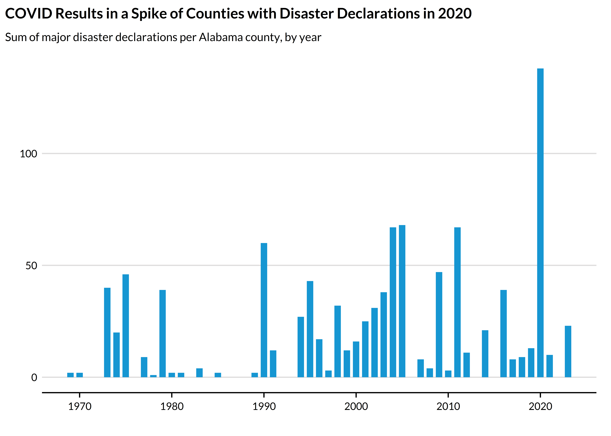
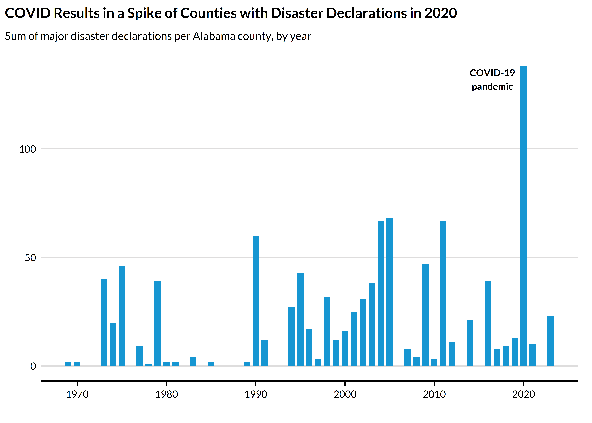

The goal of library(climateapi) is to minimize repeated data cleaning and wrangling to enable project teams to devote more time to substantive analysis and inference-making. The package works toward this goal by creating a unified interface to common datasets and data manipulation tasks. Functions (will) support both climate-specific datasets as well as those that are climate-adjacent.
Installation
You can install the development version of climateapi from GitHub with:
# install.packages("renv")
renv::install("UI-Research/climateapi")The climateapi package at work:
library(climateapi)
library(urbnindicators)
library(sf)
library(tidyverse)
library(urbnthemes)
set_urbn_defaults(style = "print")
county_disaster_declarations = get_fema_disaster_declarations_county(api = TRUE)
county_disaster_declarations %>%
filter(stringr::str_detect(GEOID, "^01")) %>% ## Alabama
group_by(year_declared) %>%
summarize(annual_incidents = sum(incidents_all, na.rm = TRUE)) %>%
ggplot() +
geom_col(aes(x = year_declared, y = annual_incidents)) +
labs(
title = "COVID Results in a Spike of Counties with Disaster Declarations in 2020",
subtitle = "Sum of major disaster declarations per Alabama county, by year",
x = "",
y = "") +
theme_urbn_print()
wildfire_perimeters = get_current_fire_perimeters() %>%
arrange(desc(incident_size_acres)) %>%
slice(1) %>%
st_transform(5070)
impacted_structures = get_structures(
boundaries = wildfire_perimeters,
geography = "tract")
us_tracts_sf = tigris::tracts(cb = TRUE, year = 2023, progress_bar = FALSE) %>%
sf::st_transform(5070)
tracts_sf = us_tracts_sf %>%
sf::st_filter(wildfire_perimeters %>% st_transform(5070) %>% st_buffer(10000)) %>%
dplyr::select(GEOID) %>%
dplyr::left_join(
impacted_structures %>%
dplyr::filter(occupancy_class == "Residential") %>%
dplyr::group_by(GEOID) %>%
dplyr::summarize(residential_units = sum(count, na.rm = TRUE)),
by = "GEOID") %>%
dplyr::mutate(county_fips = stringr::str_sub(GEOID, 1, 5)) %>%
dplyr::left_join(
tidycensus::fips_codes %>%
dplyr::mutate(county_fips = stringr::str_c(state_code, county_code)),
by = c("county_fips"))
ggplot() +
geom_sf(data = tracts_sf, aes(fill = residential_units), linewidth = .6) +
scale_fill_continuous(na.value = "darkgrey") +
geom_sf(
data = tracts_sf %>% group_by(county_fips) %>% summarize(),
fill = NA,
color = "black",
linewidth = .75) +
geom_sf(data = wildfire_perimeters, fill = NA, color = palette_urbn_magenta[5], linewidth = .75) +
labs(
title = "Estimated Residential Units within Wildfire Boundaries",
subtitle = str_c(
"Incident Name: ", wildfire_perimeters$incident_name, "\n",
"State(s): ", paste(
tracts_sf %>%
dplyr::filter(!is.na(residential_units)) %>%
dplyr::distinct(state_name) %>%
dplyr::pull(), collapse = ", "), "\n",
"Incident Size: ", round(wildfire_perimeters$incident_size_acres, 0), " acres", "\n",
"Intersecting Tracts: ", nrow(tracts_sf %>% dplyr::filter(!is.na(residential_units)))),
fill = "Residential units") +
theme_urbn_map()